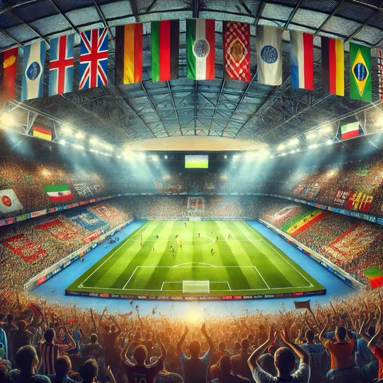

Soccer: The World's Most Popular Sport
Published on: August 15, 2024
The Global Phenomenon of Soccer
Soccer, or football as it's known in most parts of the world, is more than just a game; it's a global phenomenon that unites billions of people across continents, cultures, and languages. With over 4 billion fans, soccer is the most popular sport in the world, a title it has held for decades. The sport's universal appeal is unmatched, with professional leagues and tournaments taking place in nearly every country, and millions of players kicking a ball on streets, beaches, and fields around the globe.
Why Soccer Reigns Supreme
The simplicity of soccer is one of the key reasons for its global dominance. All it takes to play is a ball and an open space, making it accessible to people of all ages and backgrounds. This ease of access has allowed soccer to spread to every corner of the world, from the bustling cities of Europe to the remote villages of Africa and Asia.
Moreover, soccer has a way of transcending social and economic barriers. It’s a sport that can be enjoyed by anyone, regardless of their wealth or status. Whether it's a game between friends in a neighborhood park or a professional match in a packed stadium, soccer brings people together like no other sport can.
The FIFA World Cup: The Pinnacle of Soccer
The FIFA World Cup is the crowning event of the soccer world, held every four years and watched by billions. It is the most-watched sporting event on the planet, with the 2018 World Cup in Russia attracting over 3.5 billion viewers. The tournament's final alone drew more than 1.1 billion people, showcasing the sport's unparalleled global reach.
Countries from every continent compete for a chance to lift the prestigious World Cup trophy, making it a truly global competition. The tournament not only determines the best team in the world but also serves as a celebration of cultural diversity and international camaraderie.
Soccer’s Impact Beyond the Field
Soccer's influence extends far beyond the pitch. It has the power to bring about social change, inspire movements, and even affect politics. For example, during the 2010 World Cup in South Africa, the event served as a symbol of unity and progress for a nation still healing from the wounds of apartheid.
Moreover, soccer has given rise to some of the most influential and recognizable figures in the world. Players like Pelé, Diego Maradona, Lionel Messi, and Cristiano Ronaldo have become global icons, admired not only for their athletic prowess but also for their impact on popular culture.
The Future of Soccer
As soccer continues to grow, its future looks brighter than ever. New markets in Asia and North America are embracing the sport, with leagues like Major League Soccer (MLS) in the United States expanding rapidly. Technology is also playing a role, with innovations like VAR (Video Assistant Referee) and goal-line technology improving the fairness and accuracy of the game.
But at its core, soccer will always remain a simple game that anyone can play and everyone can enjoy. It’s a sport that embodies passion, unity, and the spirit of competition, making it the undisputed king of global sports.
Visit Info Decon for more insights on the world of sports and the global impact of soccer.
Explore more articles on the latest developments in sports and international competitions.